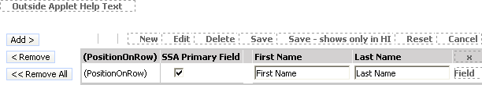

Creating the Multi-Value Group Applet
This task is a step in Creating a Shuttle Applet.
In a shuttle applet, Siebel CRM displays the multi-value group applet after the view. It contains the list of chosen records.
To create the multi-value group applet
In Siebel Tools, click the File menu, and then click New Object.
Click the Applets tab, click MVG Applet, and then click OK.
- In the General dialog box, define properties using values from
the following table, and then click Next.
Property Description Project
Choose the locked project where you created the association applet
Applet Name
Enter
Create Contact Access List MVG.For more information, see Guidelines for Naming an Applet.
Display Title
Enter
Team Members.For more information, see Guidelines for Creating an Applet Title.
Business Component
Choose Contact.
Upgrade Behavior
Choose Admin.
In the Web Layout - General dialog box, choose Popup List Mvg for the Edit List mode, and then click Next.
For more information, see Options to Control How the User Creates, Edits, Queries, and Deletes CRM Data.
On the Web Layout - Fields page, choose the following fields, and then click Next:
SSA Primary Field
First Name
Last Name
In the second Web Layout - Fields dialog box, remove Query Assistant from the list of chosen controls.
Click Next, and then click Finish to create the applet.
In the Object Explorer, click Applet.
In the Applets list, locate the Create Contact Access List MVG applet, and then modify properties using values in the following table.
Property Value Class
CSSSWEFrameShuttleBaseMvg
Associate Applet
Create Contact Access List Assoc
In the Object Explorer, expand the Applet tree, and then click Applet User Prop.
In the Applet User Props list, add new records using values from the following table.
Name Value CanInvokeMethod: AddRecords
[Active]
CanInvokeMethod: DeleteAllRecords
[Active]
CanInvokeMethod: DeleteRecords
[Active]
EnableStandardMethods
Y
Relocate controls from the Controls/Columns window to the applet until your layout resembles the layout displayed in the following diagram:
Drop the AddRecord, RemoveRecord, and RemoveAllRecords controls.
Drop the PositionOnRow control before SSA Primary Field.
Save your modifications.